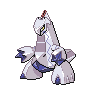

ジュラルドンのデータ
基本ステータス
もちもの・メダル・条件付き効果なし。割合の値は％です。待ち時間は短縮率、移動速度はゲーム内の値です。
| Lv | HP | 攻撃 | 防御 | 特攻 | 特防 | 移動速度 | 急所率 | 待ち時間 | HP吸収率 | 通常攻撃の速さ | 貫通 |
|---|---|---|---|---|---|---|---|---|---|---|---|
| 1 | 3200 | 135 | 70 | 20 | 50 | 3650 | 0 | 0 | 0 | 10 | 0 |
| 2 | 3300 | 148 | 78 | 24 | 55 | 3650 | 0 | 0 | 0 | 13.14 | 0 |
| 3 | 3410 | 162 | 87 | 28 | 61 | 3650 | 0 | 0 | 0 | 16.59 | 0 |
| 4 | 3531 | 178 | 97 | 32 | 67 | 3650 | 0 | 0 | 0 | 20.39 | 0 |
| 5 | 3664 | 195 | 108 | 37 | 74 | 3800 | 10 | 0 | 5 | 24.57 | 0 |
| 6 | 3811 | 214 | 120 | 42 | 82 | 3800 | 10 | 0 | 5 | 29.16 | 0 |
| 7 | 3972 | 235 | 133 | 48 | 91 | 3950 | 10 | 0 | 10 | 34.21 | 0 |
| 8 | 4149 | 258 | 148 | 54 | 100 | 3950 | 10 | 0 | 10 | 39.77 | 0 |
| 9 | 4344 | 284 | 164 | 61 | 110 | 4100 | 20 | 0 | 15 | 45.88 | 0 |
| 10 | 4559 | 312 | 182 | 69 | 122 | 4100 | 20 | 0 | 15 | 52.6 | 0 |
| 11 | 4795 | 343 | 201 | 77 | 135 | 4250 | 20 | 0 | 20 | 60 | 0 |
| 12 | 5054 | 377 | 222 | 86 | 149 | 4250 | 20 | 0 | 20 | 60 | 0 |
| 13 | 5340 | 414 | 246 | 96 | 164 | 4250 | 20 | 0 | 25 | 60 | 0 |
| 14 | 5654 | 455 | 272 | 107 | 181 | 4250 | 20 | 0 | 25 | 60 | 0 |
| 15 | 6000 | 500 | 301 | 119 | 200 | 4250 | 20 | 0 | 25 | 60 | 0 |

ジュラルドン急所・HP吸収などの仕様
通常攻撃と、ラスターカノンの砲台状態での通常攻撃が急所の対象です。
通常攻撃
効果・条件の説明
3回目が、一直線上の相手をまとめて攻撃する強化攻撃になります。
わざ1
とぎすます
効果・条件の説明
短時間受けるダメージを減らし、その後の通常攻撃に追加ダメージを付けます。
効果・条件
受けるダメージを0.6秒間20%減らします。その後8秒以内の通常攻撃3回まで、追加ダメージを与えられます。
ラスターカノン
効果・条件の説明
周囲の地面を割って攻撃した後、移動できない砲台状態になります。通常攻撃の射程・攻撃速度・ダメージを強化します。途中で終了できます。
自動終了の条件
ラスターカノンの砲台状態は、通常攻撃を2.5秒間しなかった場合にも終了する。
通常版の効果・条件
地割れが命中すると相手の移動速度を1秒間50%下げます。砲台中の強化攻撃は相手を貫通し、移動速度を1秒間60%下げます。砲台中も「メタルクロー」「ステルスロック」「ドラゴンテール」と強化攻撃を使えます。追加の最大HP割合ダメージも急所になります。
通常版の効果・条件
砲台状態は最大6秒間です。通常攻撃速度が最初は100%上がり、5秒かけて通常に戻ります。途中で砲台を解除すると、攻撃速度の上昇も終了します。
ラスターカノン+
効果・条件の説明
強化後の変更点：地面が割れる範囲にいる相手を1秒間行動不能にします。
自動終了の条件
ラスターカノンの砲台状態は、通常攻撃を2.5秒間しなかった場合にも終了する。
通常版の効果・条件
地割れが命中すると相手の移動速度を1秒間50%下げます。砲台中の強化攻撃は相手を貫通し、移動速度を1秒間60%下げます。砲台中も「メタルクロー」「ステルスロック」「ドラゴンテール」と強化攻撃を使えます。追加の最大HP割合ダメージも急所になります。
通常版の効果・条件
砲台状態は最大6秒間です。通常攻撃速度が最初は100%上がり、5秒かけて通常に戻ります。途中で砲台を解除すると、攻撃速度の上昇も終了します。
りゅうのはどう
効果・条件の説明
移動速度を下げながら力をためます。ためるほど攻撃の範囲と威力が増えます。
通常版の効果・条件
ためている間は移動速度が30%下がります。攻撃で付けるマークは最大6個で、5秒間残り、追加の命中で残り時間を更新します。マークは解除可能です。このわざでKOすると待ち時間が30%短くなり、8秒以内の通常攻撃3回まで追加ダメージと1回1.5秒の待ち時間短縮が付きます。
通常版の効果・条件
このわざをマーク付きの相手に当てると、マークをすべて消費して数に応じた追加ダメージを与えます。相手チームのジュラルドンもマークを消費できますが、その相手にはマークによる追加ダメージは発生しません。
りゅうのはどう+
効果・条件の説明
強化後の変更点：相手チームのポケモンを倒すと、最大HPの8%を追加で回復します。
通常版の効果・条件
ためている間は移動速度が30%下がります。攻撃で付けるマークは最大6個で、5秒間残り、追加の命中で残り時間を更新します。マークは解除可能です。このわざでKOすると待ち時間が30%短くなり、8秒以内の通常攻撃3回まで追加ダメージと1回1.5秒の待ち時間短縮が付きます。
通常版の効果・条件
このわざをマーク付きの相手に当てると、マークをすべて消費して数に応じた追加ダメージを与えます。相手チームのジュラルドンもマークを消費できますが、その相手にはマークによる追加ダメージは発生しません。
わざ2
メタルクロー
効果・条件の説明
前方へツメを飛ばして相手を減速させ、次の通常攻撃を強化します。
効果・条件
命中した相手の移動速度を2秒間30%下げます。
ドラゴンテール
効果・条件の説明
相手を押し出しながら後方へ下がり、次の通常攻撃を強化します。
通常版の効果・条件
相手を0.5秒間押し出します。壁を挟んでいても使え、最大2回分を保有できます。連続使用には2.5秒以上の間隔が必要です。
ドラゴンテール+
効果・条件の説明
強化後の変更点：相手に5秒間のマークを付け、次にダメージを与えたときにマークを消費して追加ダメージを与えます。
通常版の効果・条件
相手を0.5秒間押し出します。壁を挟んでいても使え、最大2回分を保有できます。連続使用には2.5秒以上の間隔が必要です。
ステルスロック
効果・条件の説明
指定場所に見えない岩の罠を置き、触れた相手へ継続ダメージを与えます。
通常版の効果・条件
見つかっていない罠は最大60秒間残り、同じ相手へ2回ダメージを与えると、その相手を1秒間移動不能にします。移動速度は命中ごとに2秒間25%下がり、最大4段階まで重なります。罠が発見されると3秒間のシールドを得ます。シールドは最大5段階まで重なり、追加されると持続時間を更新します。連続使用には1秒以上の間隔が必要で、設置できる罠は最大2個です。
通常版の効果・条件
使用後の次の通常攻撃が強化攻撃になります。
ステルスロック+
効果・条件の説明
強化後の変更点：最大3回分まで保有できるようになります。
通常版の効果・条件
見つかっていない罠は最大60秒間残り、同じ相手へ2回ダメージを与えると、その相手を1秒間移動不能にします。移動速度は命中ごとに2秒間25%下がり、最大4段階まで重なります。罠が発見されると3秒間のシールドを得ます。シールドは最大5段階まで重なり、追加されると持続時間を更新します。連続使用には1秒以上の間隔が必要で、設置できる罠は最大2個です。
通常版の効果・条件
使用後の次の通常攻撃が強化攻撃になります。
ユナイトわざ
ユナイトわざ使用後の共通強化
移動速度30%上昇、通常攻撃速度35%上昇、最大HPの20%のシールド（6秒）
ジュラルディザスター
効果・条件の説明
自分の周囲を円形にビームでなぎ払い、妨害無効になりながら攻撃します。
効果・条件
ビームが1匹に当たるごとに攻撃が8%上がり、シールドも強くなります。最大5段階まで重なります。円を描いた後の攻撃は相手を0.5秒間押し出し、地面には10秒間燃える輪が残ります。輪は0.5秒ごとにダメージを与え、相手の移動速度を50%下げます。2回目以降の攻撃には、このわざによる攻撃上昇が反映されます。
効果・条件
攻撃の上昇は8秒間、燃える輪に触れたときの50%の減速は1秒間です。輪が残る10秒間とは持続時間が異なります。